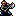

Character Overview
Halvan is a member of the Freeblades and one of the double axe fighters that join you at the beginning of the game. He's a competent
combat unit with a few of his own quirks.
Like Orsin, Halvan's growth stats are mediocre, but his base stats are high enough for him to one-round KO most early-game enemies in Thracia 776.
Although he has a little less SPD, Halvan's strong and fast enough to dominate many weak fighters.
Despite not having a personal weapon, Halvan has a great PCC of 4 that helps out his combat potential, and he is given a Brave Axe if you visit
one of the villages with him in Chapter 1. Although not exclusive to him, the Brave Axe can deal serious damage along with his Vantage skill,
allowing him to draw first blood in most cases.
Halvan may be the weaker axe fighter, but he does not fall too behind given his Vantage skill and high PCC. Consider using him unless his
stats don't go anywhere or if you find better combat units.
Base Stats and Growths
| Level 2 Axefighter  | HP | STR | MAG | SKL | SPD | LCK | DEF | CON | MOV |
|---|---|---|---|---|---|---|---|---|---|
| Base Stats | 28 | 7 | 0 | 7 | 7 | 2 | 5 | 12 | 6 |
| Growth Rates | 80% | 40% | 5% | 20% | 30% | 30% | 30% | 30% | 2% |
With a base HP of 28 and a base CON of 12, Halvan is a great candidate for early-game capturing. This is made much more easier with the Brave Axe, but more on that later. Halvan has a point higher than Orsin in terms of STR and CON, but is 2 points lower in terms of SPD. This means that Halvan may not double in some cases while capturing, although he has more capture potential and hits raw hits a little harder. His poor LCK makes him susceptible to low digit enemy criticals, so watch out for that. Despite having nearly identical stats to Orsin, Halvan may struggle to kill enemies with his lack of crit potential in the early-game.
Having an amazing growth rate in HP means a lot less when you look at Halvan's SKL, SPD, LCK, and DEF growths. Most of the growth rates are flat 30's, which is a bit troublesome, as it is easy to get terrible level-ups unless you're really lucky. Overall, it all depends on luck that determines whether or not Halvan gains good growths throughout the early-game, as not too many Crusader scrolls are made accessible until later.
Other Stats
| Weapon Ranks | Skills | PCC | Leadership Stars | Movement Stars | Promotion Gains |
|---|---|---|---|---|---|
| Vantage | 4 | 0 | 0 | STR + 2 / MAG + 1 / SKL/SPD/DEF + 3 / Sword Rank D |
Halvan has a higher PCC and axe rank compared to Orsin, but these statistical advantages don't amount to much. Axe ranks are easy to train, and Halvan's PCC of 4, while being impressive, is difficult to make use of if he cannot use any weapon that grants a significant crit bonus. Killer Axes do exist in this game, but they are hard to obtain and very rarely equipped by enemy units. If you wish to make the most of Halvan, I highly suggest finding an axe with a good crit bonus, as Halvan will be able to dominate with any axe of the like.
Vantage is a good skill to have as it limits the damage you take from counter-attacks if you bait the enemy into attacking first. It won't be super useful until you receive the Brave Axe, however. Other than that, Vantage doesn't grant much benefit unless you can kill the enemy in one hit, which is possible in this game given the variety of effective weapons. Halvan can make much use of these effective weapons, so be sure to stick them on Halvan.
With no leadership/movement stars, Halvan doesn't offer much else. His promotion gives a significant boost to his combat stats, meaning you don't have to worry too much about getting his stats up. A D rank in swords isn't super useful as Thracia 776 gives you many outstanding sword units anyway.
PRF's and Support Bonuses
| This unit does not have any PRFs. |
|---|
Supports: None
Supported by: Eyvel
Character Tips
Halvan's best early-game weapon is the Brave Axe. Combined with his Vantage skill, Halvan can deal two hits of significant damage, or kill the attacking enemy outright, if he is attacked while holding this axe. It's also great for capturing as Halvan has two points of base SPD less than Orsin. Definitely stick this great weapon on Halvan until you find a better candidate.
Like with Orsin, try to give Halvan a Crusader scroll or two to help out a stat that he's falling behind on. You'll want to distribute these scrolls equally to make the most of your team.